@manuel_ponce_
.
In the Lambayeque region of Peru, this archaelogical site occupied by the Sican Culture in the northwest area of Peru. Home to 50 man made adobe pyramids and a network of tombs.
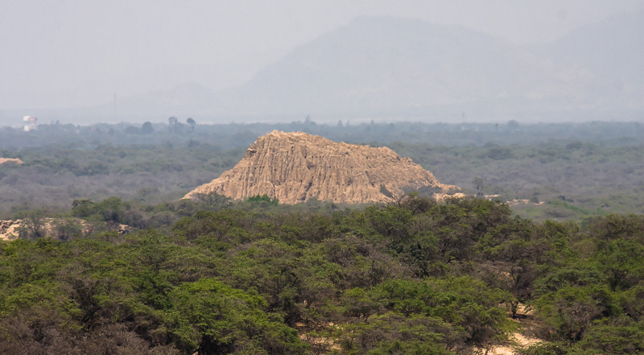
(Photo from Jara Erique. "Bosque de Pómac, Lambayeque, Perú." 2014. Jpeg. 11/19/2020)
This depiction of what an elite tomb setup of how they placed the elite upside down and in the fetal position. Surrounded by not only valuable ornaments
silver ores, but they required fuel that most used llama dung or moss found at high altitudes.
This position was different comapared to the Moche culture where they baried their dead laying down.
This gives insight to how its possible how Sican culture changed their perspective of the afterlife and believed in rebirth after death.
These funerary practices suggests the existance of an elite lineage and how the elite maintain power even after death.
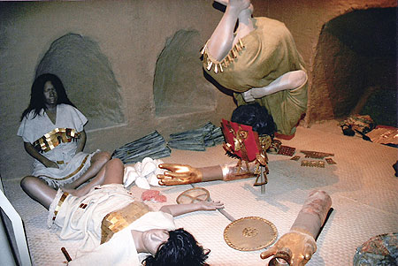
These Funerary masks where mostly flat and made of metal with details that allowed for movement to represent life. Usually one was put on the deads head and sometimes had extra ones placed
around their feet.
B) [John Wise Ltd., New York, until 1957]; Nelson A. Rockefeller, 1957, New York 1957, on permanent loan to the Museum of Primitive Art, New York, 1957–1978
C) [John Wise Ltd., New York, until 1957]; Nelson A. Rockefeller, New York, 1957, on loan to the Museum of Primitive Art, New York, 1957–1978
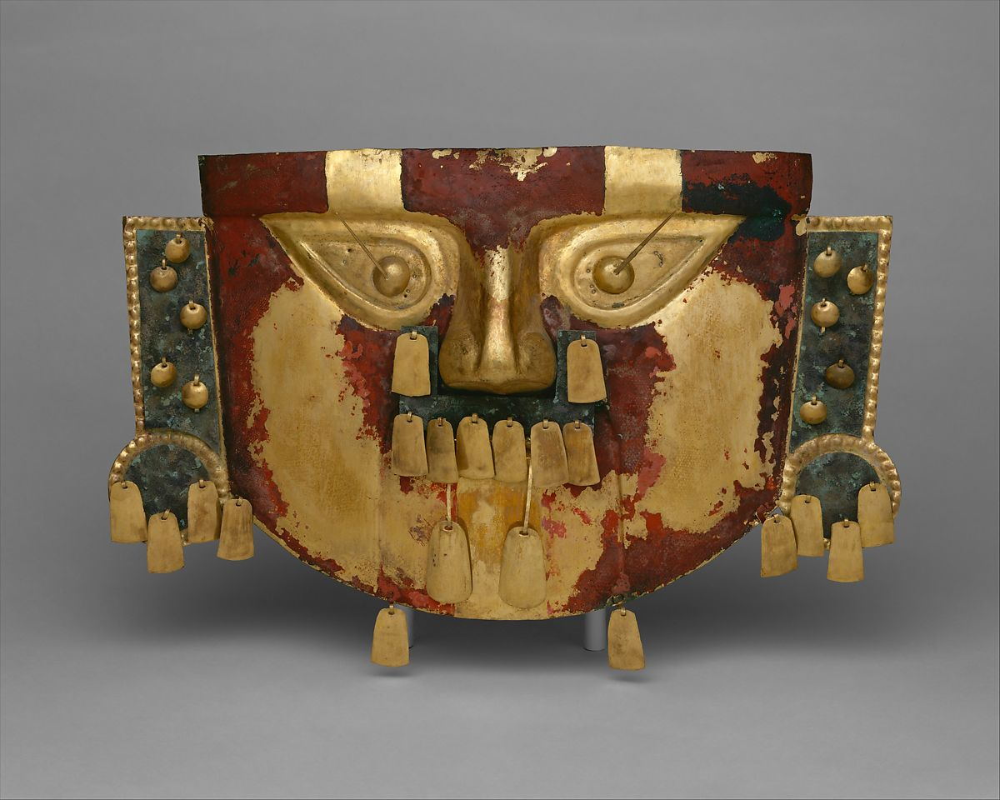
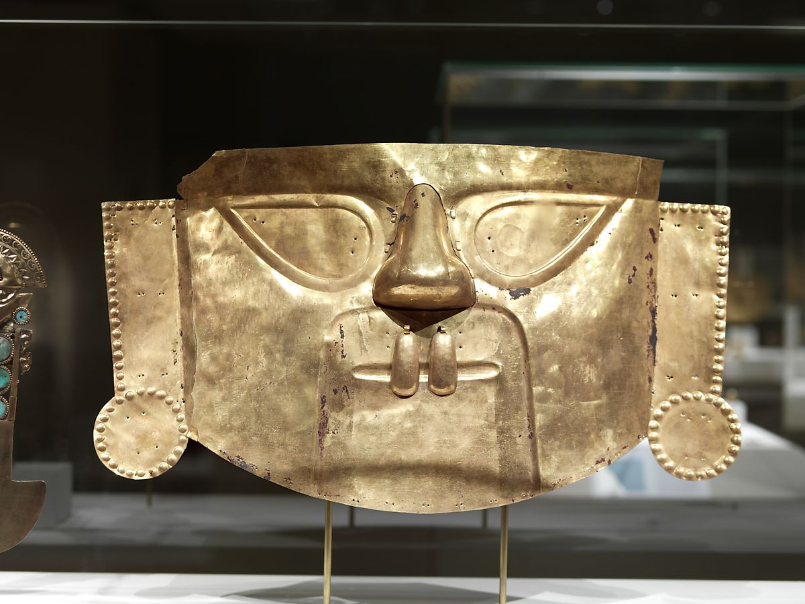
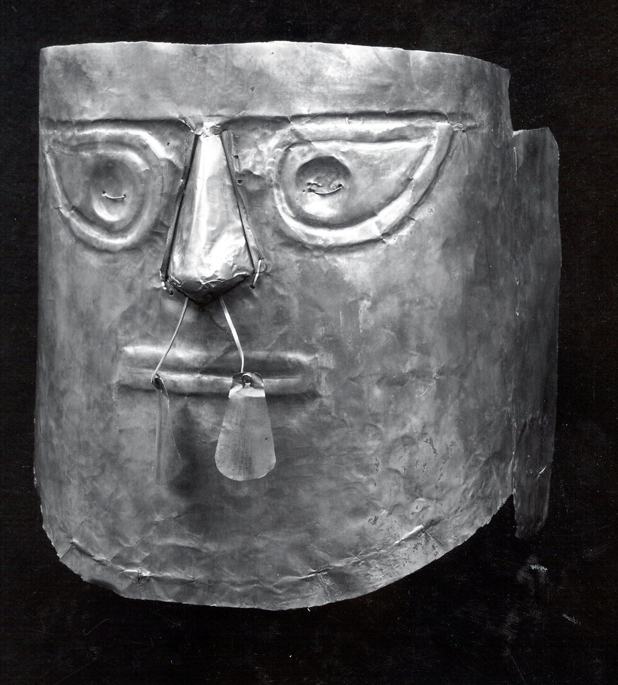
A) [Maurice L. Bonnefoy, D'Arcy Galleries, New York, until 1965]; Alice K. Bache, New York, 1965–1977 (partial gift from 1974)B) [John Wise Ltd., New York, until 1957]; Nelson A. Rockefeller, 1957, New York 1957, on permanent loan to the Museum of Primitive Art, New York, 1957–1978
C) [John Wise Ltd., New York, until 1957]; Nelson A. Rockefeller, New York, 1957, on loan to the Museum of Primitive Art, New York, 1957–1978
Human sacrifice was something the Sican Culture also played a role in. Two different examples about how human sacrafices could be percieved would be with two different Huacas. In Hueca del Loro, burials of young woman carefully placed around the elite.
In Huaca Las Ventanas, most of the bodies belong to men and their placement was not structured around the elite. It has been suggested that in Huaca Las Ventanas belonged to volunteers that participated in rituals that explored the idea
creation of life through death.
With the ceremonial knifes those were carefully crafted to portray Elites in their society.
B) Paul R. Cheesman and Paul A. Clifford, Miami, FL, acquired by 1964; Jan Mitchell, New York, 1991.
With the ceremonial knifes those were carefully crafted to portray Elites in their society.
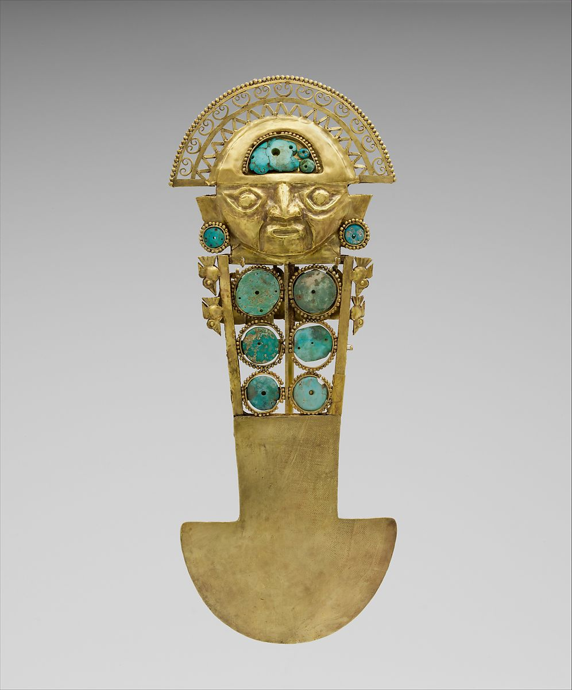
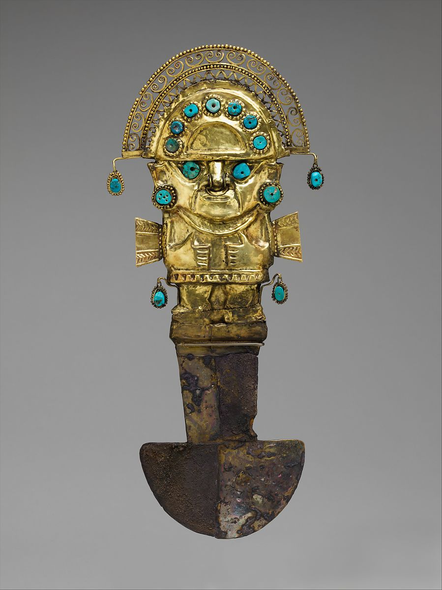
.jpg)
B) Paul R. Cheesman and Paul A. Clifford, Miami, FL, acquired by 1964; Jan Mitchell, New York, 1991.
These ornaments all found in tombs of the elites to not just decorate but to also demonstrate the elite will take their possessions with them to the next life.
b) Paul R. Cheesman and Paul A. Clifford, Miami, FL, acquired by 1964; Jan Mitchell, New York, acquired by 1985, until 1991
c) [John Wise, Ltd., New York, until 1956]; Museum of Primitive Art, New York, 1956–1978
d) [H. A. Elsberg Inc., New York, until 1928]
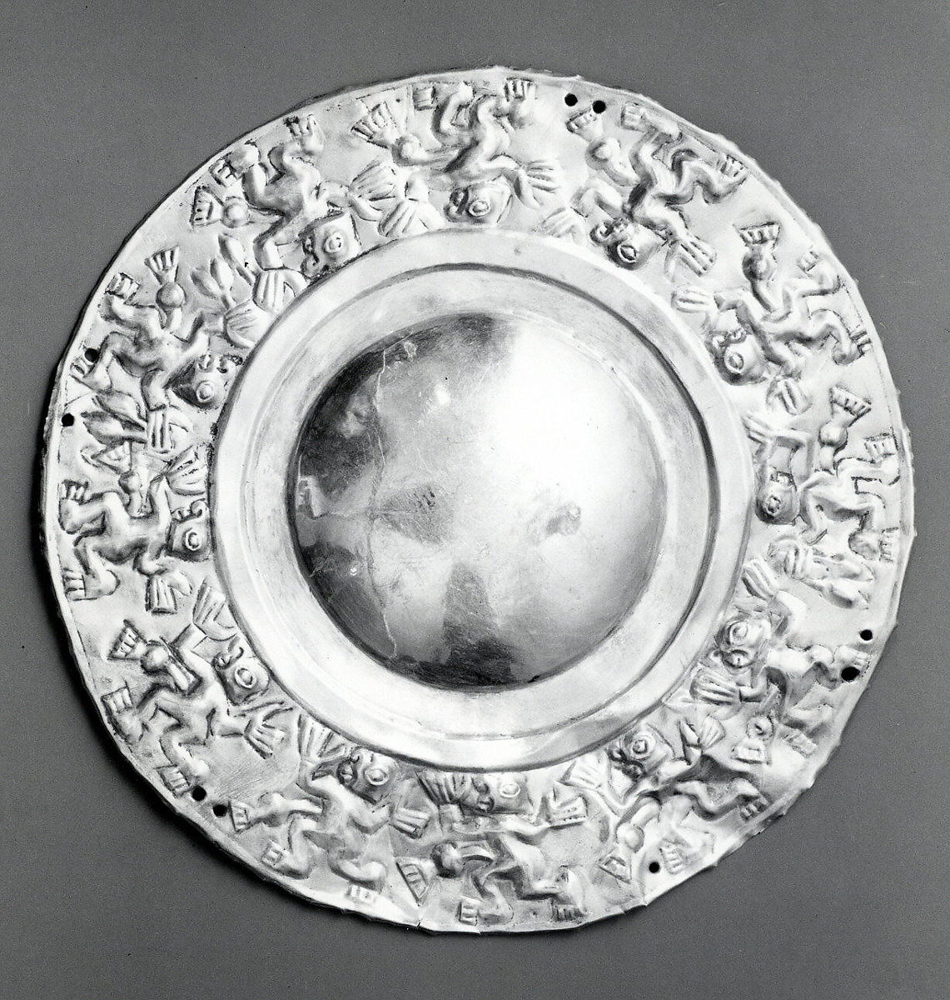
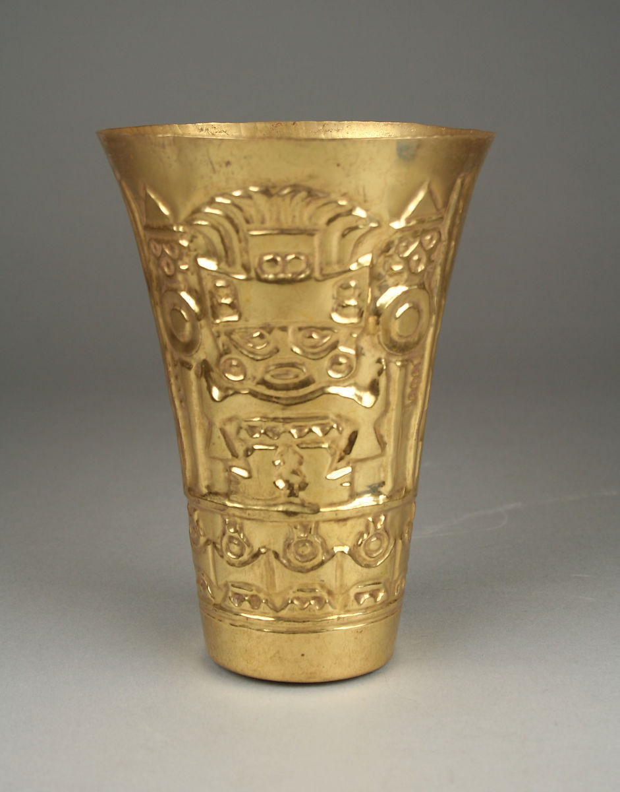
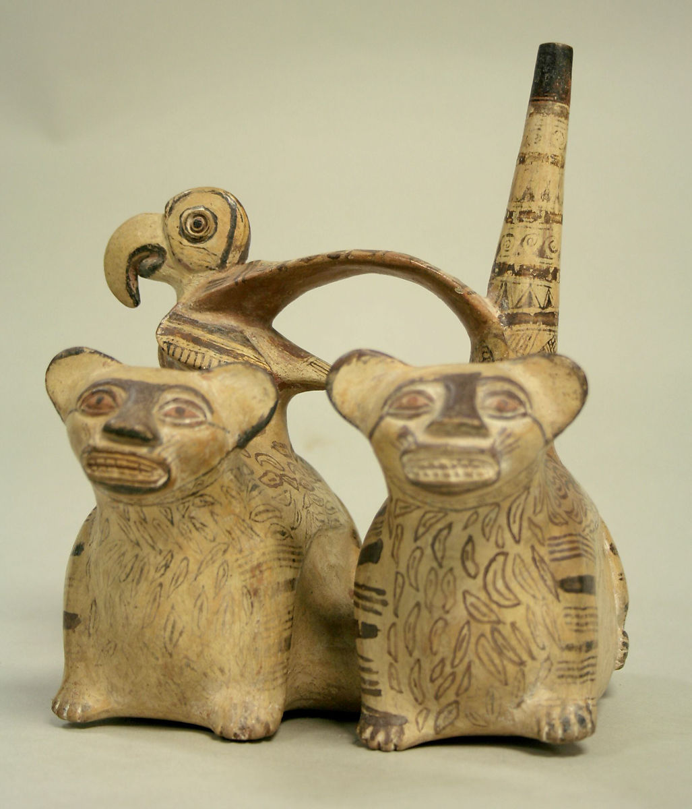
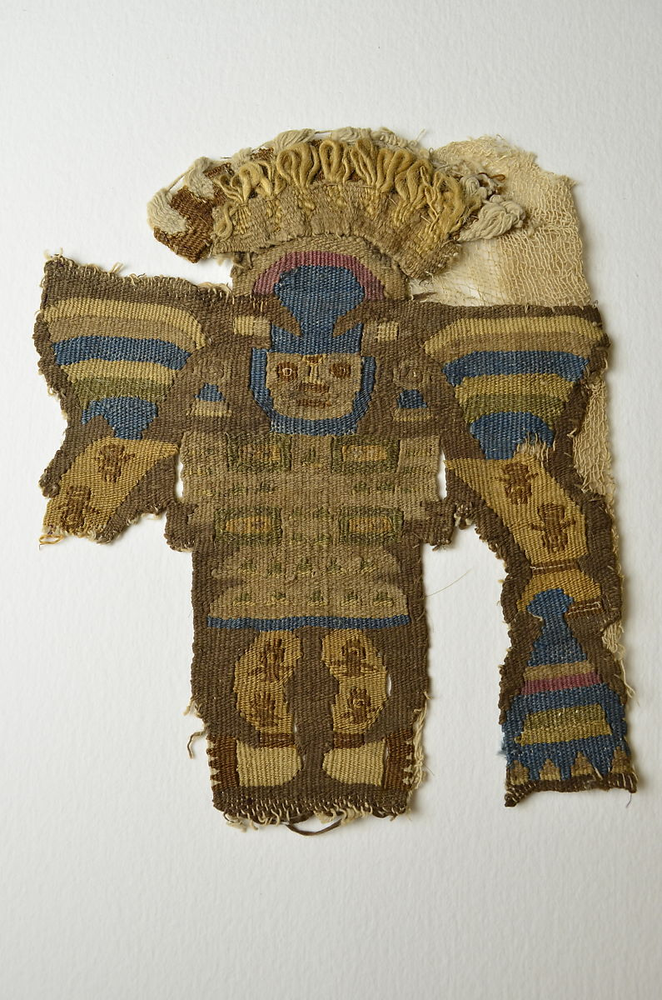
a) [Mirko Sors, Montevideo, Uruguay, until 1958]; Nelson A. Rockefeller, New York, 1958, on loan to The Museum of Primitive Art, 1958–1978b) Paul R. Cheesman and Paul A. Clifford, Miami, FL, acquired by 1964; Jan Mitchell, New York, acquired by 1985, until 1991
c) [John Wise, Ltd., New York, until 1956]; Museum of Primitive Art, New York, 1956–1978
d) [H. A. Elsberg Inc., New York, until 1928]
Cockburn, Aidan., Eve. Cockburn, and Theodore A. Reyman. Mummies, Disease & Ancient Cultures / Edited by Aidan Cockburn, Eve Cockburn, and Theodore A. Reyman. 2nd ed. Cambridge ;: Cambridge University Press, 1998. Print.